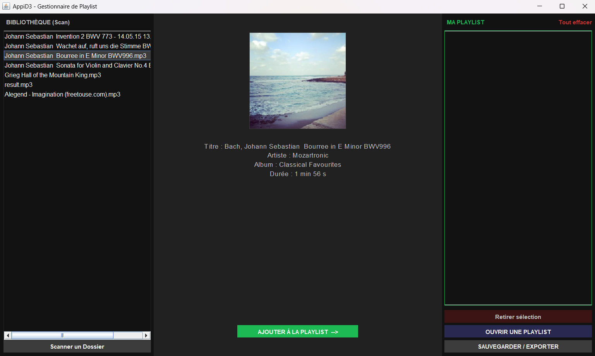

Projet Extraction de métadonnées et génération de playlists en java 2025-2026
Dans le cadre du cours de Programmation Orientée Objet (POO), nous avons développé une application en java capable d'extraire les métadonnées de fichiers musicaux et de générer des playlists. Ce projet, bien que dense dans l'organisation de nos emplois du temps, s'est révélé très formateur et nous a permis de concrétiser nos compétences techniques acquises au semestre, notamment la manipulation de fichiers MP3 avec JAudioTagger et la gestion de fichiers texte pour l'exportation des playlists.
